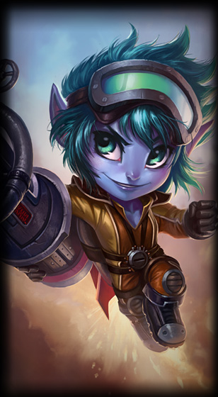

Tristana

Janna

shyvana

Galio

Tryndamere


tristana
la artillera yordle
ciudad bandle
La grandeza viene a veces en frascos pequeños, como demuestra esta diminuta artillera yordle. En medio de un mundo hostil, Tristana no da la espalda a reto alguno y ha conseguido convertirse en un arquetipo de habilidad marcial, valor a toda prueba y desbordante optimismo. Para Trist y su fiel cañón, Boomer, cada misión es una oportunidad de demostrar que los héroes existen.